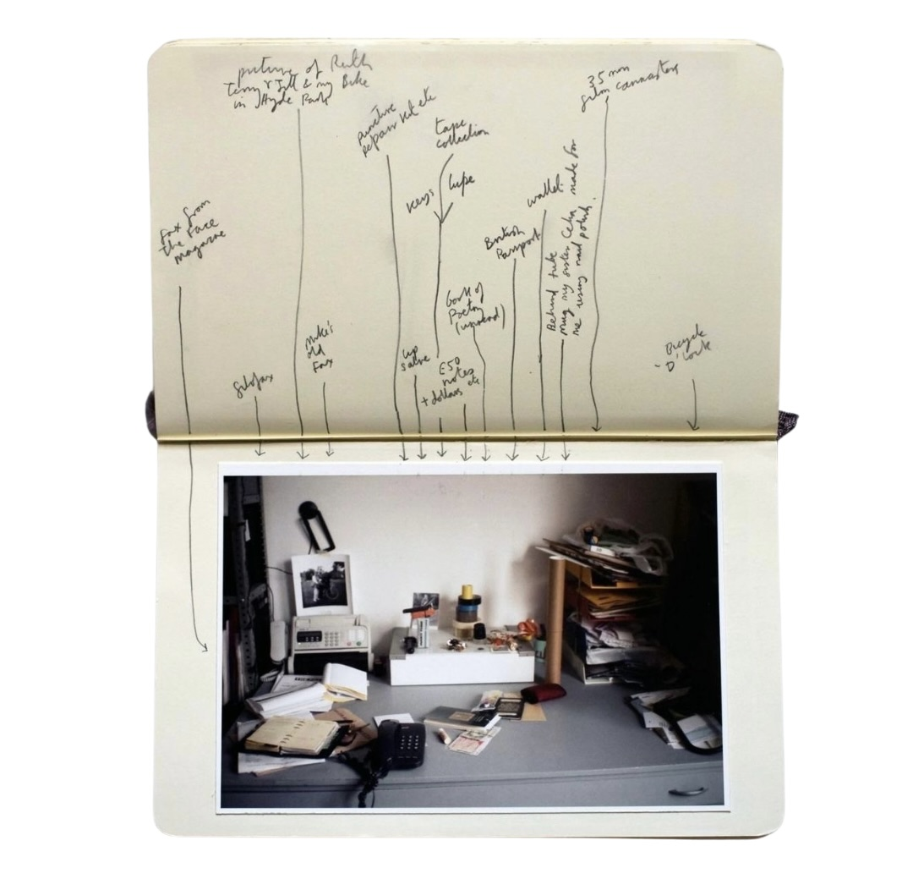
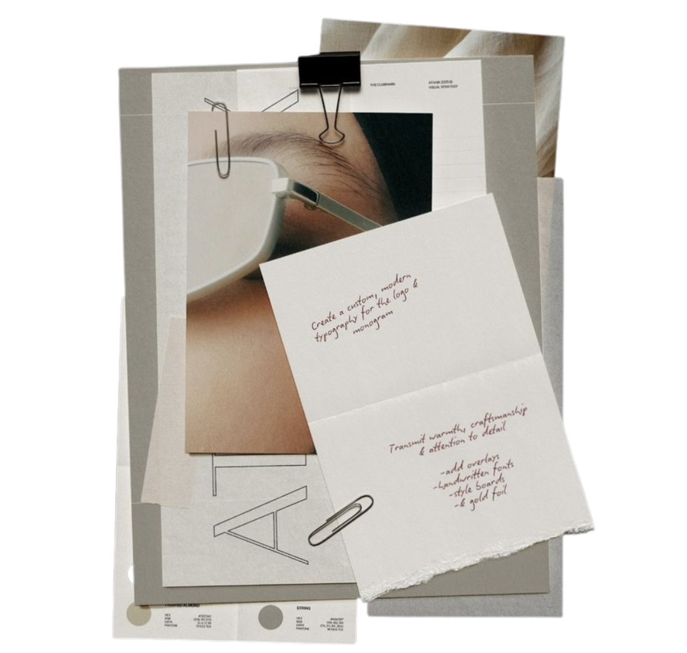
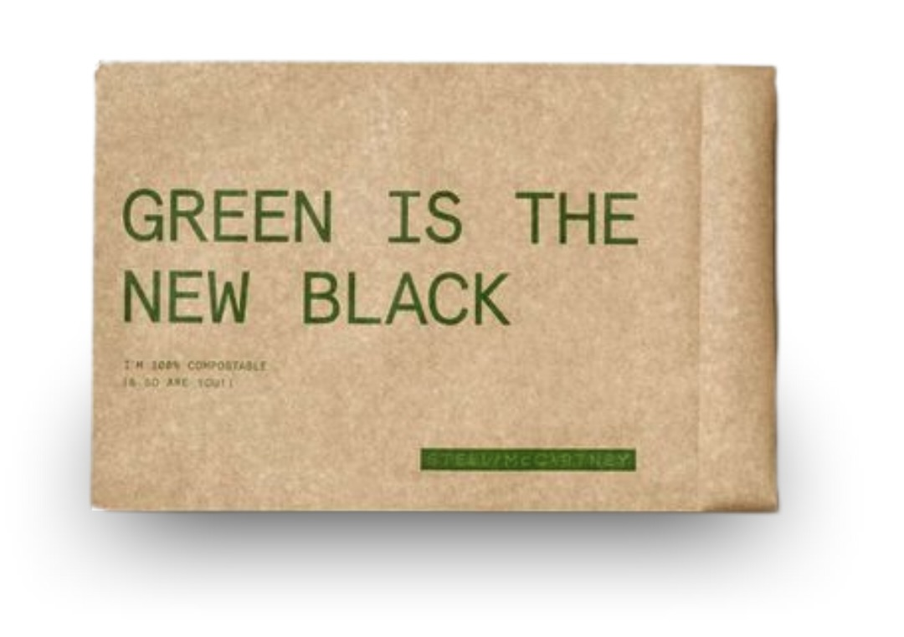
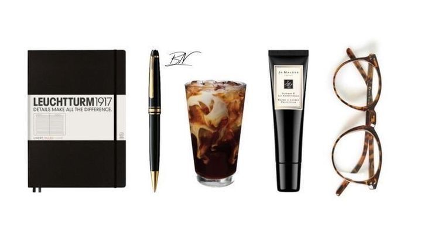

Playground
Mini ejercicios para desbloquear la creatividad.
Bloqueo Creativo
Recuperar el impulso de crear
Ejercicio inspirado en: El camino del artista — Julia Cameron
-
Páginas matutinas
Cada mañana dedicale 10 minutos a escribir todo lo que se te cruce por la cabeza. No busques sentido ni forma, solo descargá.
-
Cita con el artista
Regalate una cita con vos mismo: dos horas a solas haciendo algo que despierte tu curiosidad o tu juego interno. Podés ir a un museo, sacar fotos, dibujar, o simplemente caminar observando. Lo importante es hacerlo sin objetivo productivo, solo por el placer de crear.
-
Identificá el sensor
El sensor es esa voz interna que te critica o te dice que no sos capaz. Escuchala y reconocela, pero no la creas. Nombrarla te ayuda a empezar a separarte de ella.
-
Monstruos y héroes de la creatividad
Pensá en cinco personas, momentos o frases que te hayan hecho sentir inseguridad o miedo de crear, y en cinco que te hayan hecho sentir seguridad y libertad. Tomate un momento para reconocer cómo influyen hoy en vos.
-
Cartas para sanar
Elegí uno de tus monstruos y uno de tus héroes. Escribiles una carta a cada uno: deciles lo que necesitás soltar y lo que necesitás agradecer. No corrijas ni filtres —escribí como si tuvieras ocho años y te hablaras con total honestidad.
Encontrá tu identidad de marca
Reconectar con la esencia de lo que querés comunicar
-
Definí tu esencia
Escribí tres palabras que representen la energía, los valores o la emoción que querés transmitir con tu marca. No pienses tanto: lo primero que salga suele ser lo más auténtico.
-
Observá tus referentes
Buscá tres marcas, artistas o proyectos que admires. Analizá qué te atrae de ellos: los colores, el tono, la forma de mostrarse o la sensación que te dejan.
-
Hacé un collage visual
Creá un moodboard con imágenes, texturas, frases o paletas que sientas que hablan de vos. No busques estética perfecta, buscá coherencia emocional.
-
Encontrá tu voz
scribí una breve presentación como si tu marca fuera una persona. ¿Qué diría? ¿Qué tono usaría? ¿Sería cercana, divertida, serena, rebelde?
-
Refiná y sintetizá
Volvé a mirar todo lo anterior y elegí tres elementos que se repiten: esos serán los pilares de tu identidad visual y narrativa.
Darle una mirada consciente a tu negocio
Diagnóstico y acción para una gestión más sustentable
-
Analizá dónde estás parado/a
Hacé un breve diagnóstico ambiental: consumo energético, residuos, insumos y transporte.
-
Revisá tu cadena de valor
Identificá qué etapas de tu producción generan más impacto y cuáles podrías optimizar o cambiar. Identificá proveedores y procesos clave. ¿Hay alternativas más sostenibles?
-
Definí prioridades
Elegí tres mejoras alcanzables a corto plazo (por ejemplo, reducir papel, cambiar packaging, medir consumo).
-
Establecé metas claras
Fijate objetivos específicos, medibles y con plazos definidos para cada prioridad.
-
Medí y comunicá tus avances
Tomá nota de los cambios y comunicalos. La sostenibilidad también crece con el ejemplo.
Mindfulness para creativos
Ejercicios para cultivar la atención plena y potenciar tu creatividad
-
Respiración consciente
Dedica 5 minutos al día a sentarte en silencio y concentrarte en tu respiración. Siente el aire entrando y saliendo, y si tu mente se distrae, suavemente vuelve a enfocarte en la respiración.
-
Observación sin juicio
Elige un objeto cotidiano y obsérvalo detenidamente durante 5 minutos. Nota sus detalles, texturas y colores sin etiquetarlo como "bonito" o "feo". Simplemente observa.
-
Escaneo corporal
Acuéstate o siéntate cómodamente y realiza un recorrido mental por tu cuerpo, prestando atención a las sensaciones en cada parte, desde los pies hasta la cabeza.
-
Creatividad consciente
Antes de comenzar un proyecto creativo, tómate un momento para respirar profundamente y establecer una intención clara. Durante el proceso, si te sientes bloqueado, detente y vuelve a tu respiración.
-
Diario de gratitud creativa
Cada día, escribe tres cosas relacionadas con tu proceso creativo por las que estás agradecido. Esto puede ayudarte a mantener una perspectiva positiva y abierta.